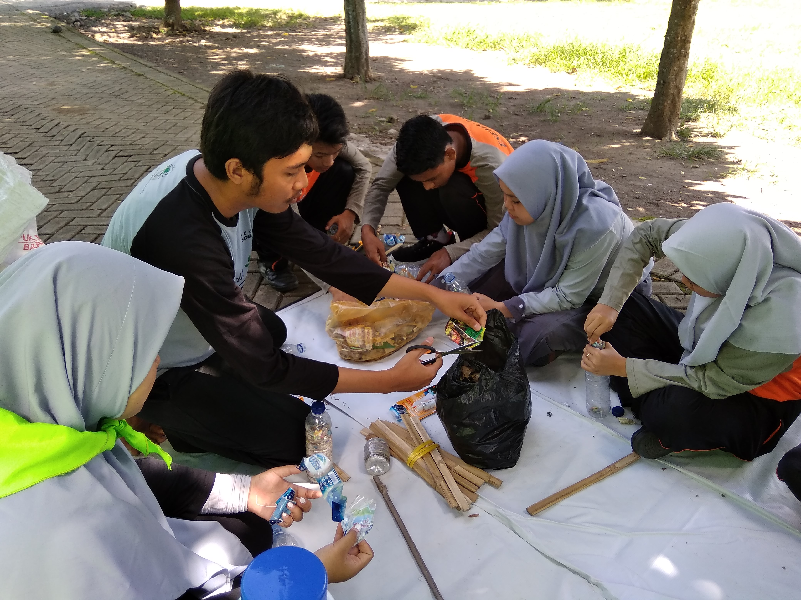
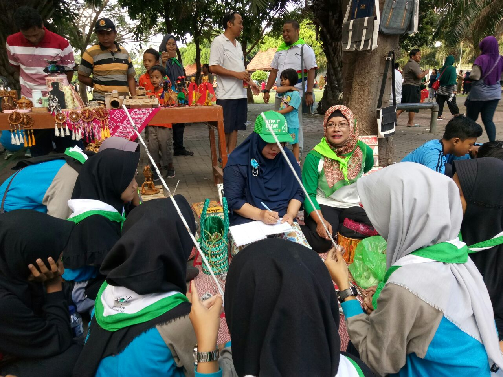

Berikut data diri saya
Nama Lengkap : Marisa Dyah Ayuningtyas
Tempat Tanggal Lahir : Banyuwangi, 19 Mei 2002
Alamat : Dsn. Lugonto Rt 002/003 Ds. Rogojampi
Jenis Kelamin : Perempuan
Agama : Islam
No. Telp : 08970367193
Email : marisadyahayu@gmail.com
| No. | Jenjang Pendidikan | Tahun |
|---|---|---|
| 1 | Tk Pertiwi Rogojampi | 2006-2008 |
| 2 | SD Negeri 3 Rogojampi | 2008-2014 |
| 3 | SMP Negeri 1 Rogojampi | 2014-2017 |
| 4 | SMK Negeri 1 Banyuwangi | 2017-2020 |
| 5 | STIKOM PGRI Banyuwangi | 2020-2024 |
Saya pernah mengikuti Organisasi Laskar Hijau
semasa berpendidikan di Smk Negeri 1 Banyuwangi
Organisasi Laskar Hijau Bergerak dalam bidang Pelestarian Lingkungan
dalam kegiatannya saya dapat pengalaman yang luar biasa.saya dapat mengetahui
bagaimana membuat pupuk organik ,membuat kreativitas dari barang barang bekas.
mengenal sistem tanaman hidroponik dan juga saya pernah mengikuti beberapa kegiatan clear and clean pantai bersama duta banyuwangi


Saya dapat menggunakan Teknologi Komputer seperti pengetahuan dasar tentang keahlian teknologi komputer
untuk menyelesaikan pekerjaan. seperti menjalan Microsoft Office, Windows Operating System dan juga
memahami HTML/CSS maupun JavaScript.saat ini saya juga sedang mempelajari lebi dalam desain
maka itu saya mulai menguasai tentang Photo editing, desain grafis dan juga video editing.